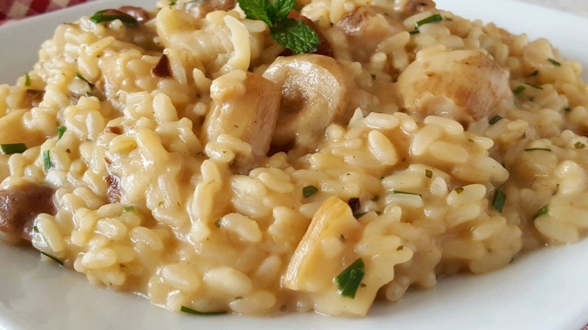

Rețetă Risotto cu ciuperci și parmezan

Descriere
O reinterpretare a clasicului italian, acest risotto bogat și cremos este
îmbogățit cu savoarea delicată a ciupercilor și aromele intense ale
parmezanului. O combinație perfect echilibrată între texturi și gusturi,
acest risotto este o alegere ideală pentru o cină rafinată sau o ocazie
specială.
Ingrediente
- 300g orez arborio
-
500g ciuperci (champignon sau alte ciuperci la alegere), tăiate felii
- 1 ceapă medie, tocată fin
- 2 căței de usturoi, mărunțiți
- 1 litru supă de legume sau pui, fierbinte
- 100ml vin alb sec
- 50g unt
- 50g parmezan ras
- Sare și piper negru proaspăt măcinat, după gust
- O lingură de ulei de măsline
Pași pentru preparare
-
Încălzește uleiul de măsline într-o cratiță mare și călește ceapa și
usturoiul până devin aurii și moi.
-
Adaugă ciupercile și gătește-le până când își reduc volumul și încep să
se rumenească.
-
Adaugă orezul arborio și amestecă bine pentru a-l acoperi cu ulei și
legume.
-
Toarnă vinul alb și amestecă până când acesta este absorbit complet de
orez.
-
Adaugă supa fierbinte, o polonică la fiecare câteva minute, și amestecă
continuu până când orezul este gătit al dente și risotto-ul are o
consistență cremoasă.
-
Încorporează untul și parmezanul ras. Condimentează cu sare și piper
după gust.
-
Servește risotto-ul cald, presărat cu puțin parmezan ras deasupra.